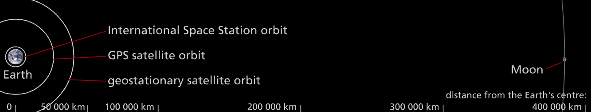

Satellite Clock Explorer
Earth Satellites
The Earth has one natural satellite (the Moon) and a large number of man-made satellites. Satellites orbit at different distances from the Earth.
Global positioning systems (GPS) use 31 NAVSTAR GPS satellites.
The International Space Station (ISS) orbits close to Earth, at an altitude of about 350 km.
GPS satellites orbit at an average altitude of about 20, 000 km.
Geostationary satellites (which include many communications satellites) orbit at an average altitude of 35, 786 km above mean sea level.
The Moon is 384, 400 km from the Earth.
Accurate Clocks
GPS satellites broadcast their location and an accurate time signal. GPS receivers calculate their position by comparing signals from multiple satellites.
For accurate positioning, time signals sent by satellites must be extremely precise. Einstein's theories of relativity predict that time can be slowed down in some situations. But are these effects big enough to affect GPS?
The Effect of Speed
Einstein's special theory of relativity predicts that a clock moving past an observer will appear to run slow. The effect is tiny, but gets bigger as the speed increases. Satellites are moving fast relative to us. To us, satellite clocks should appear to run slow.
The Effect of Gravity
Einstein's general theory of relativity predicts that a clock in a gravitational field will appear to run slow. The effect is tiny, but gets bigger as the strength of the field increases. Satellites are in a weaker gravitational field than us. To us, satellite clocks should appear to run fast.
Satellite clock explorer
| Satellite | Altitude | Orbital Radius | Orbital Speed | Time LOST1 | Time GAINED2 | TT -/+ (per sec)3 | TT -/+ (per day)4 |
| ISS | 350Km | 6,720Km | 7.7Km s-1 | 330ps | 36ps | -294ps | -25μs |
| GPS | 20,230Km | 26,600Km | 3.9Km s-1 | 83ps | 529ps | +446ps | +39μs |
| Geostationary | 35,794Km | 42,164Km | 3.1Km s-1 | 53ps | 591ps | +538ps | +46μs |
1. per second due to relative motion
2. per second due to weaker gravity
3. Total time lost (-) or gained (+) per seconds
4. Total time lost (-) or gained (+) per seconds